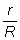

Într−un metal, atomii interacţionează astfel încât unul sau doi electroni ai fiecărui atom nu mai sunt legaţi de atomul din care au provenit. Pierzând electroni, atomii unui metal sunt de fapt ioni pozitivi. Printre aceştia se agită de colo−colo electronii eliberaţi (figura 1).

Figura 1. Reprezentarea electronilor liberi dintr−un
metal.
Estimează câţi electroni liberi sunt în fiecare m3 de metal. Prezintă modul în care ai făcut estimarea.
Răspuns: De ordinul 1029!
Dacă aplici o tensiune electrică la capetele unei bucăţi de metal, electronii liberi se vor deplasa către capătul cu potenţial mai ridicat − prin bucata de metal se stabileşte un curent electric.
a) Estimează viteza cu care trec electronii printr−un fir metalic cu secţiunea 1 mm2 străbătut de curent cu intensitatea 1 A. Foloseşte rezultatul obţinut la provocarea precedentă.
b) De ce oare becul se aprinde imediat ce acţionezi întrerupătorul aflat la mai mulţi metri distanţă?
Răspuns: a) De ordinul 10-4 m/s! b) Firele de legătură sunt "pline" cu electroni liberi. De îndată ce este aplicată o tensiune electrică, toţi electronii se pun în mişcare, asemenea vehiculelor dintr−o coloană care pornesc aproape simultan la culoarea verde a semaforului.
Un rezistor are rezistenţa electrică 10 kΩ. La capetele rezistorului se aplică tensiunea 15 V.
Cât te aştepţi să fie intensitatea curentului prin rezistor? Trebuie oare să faci vreo presupunere cu privire la valabilitatea legii lui Ohm pentru acest rezistor?
Răspuns parţial: Trebuie făcută presupunerea rezonabilă că legea lui Ohm este valabilă pentru acest rezistor. Altfel, nu se poate anticipa valoarea intensităţii curentului care va străbate rezistorul când acestuia i se aplică o tensiune electrică având o anumită valoare.
Pe un bec de lanternă sunt înscise valorile nominale de funcţionare: 3,5 V şi 200 mA.
Cât te aştepţi să fie intensitatea curentului care străbate filamentul becului, când acestuia i se aplică tensiunea 2 V?
Răspuns: Rezistenţa electrică a filamentului unui bec de lanternă se modifică seminificativ odată cu modificarea tensiunii aplicate. Nu poate fi anticipată precis valoarea intensităţii curentului fără a cunoaşte caracteristica curent−tensiune a filamentului! Poţi face însă o estimare: dacă rezistenţa filamentului nu s−ar modifica odată cu modificarea tensiunii (ar rămâne constantă la valoarea 3,5 V/0,2 A=17,5 Ω), intensitatea curentului la 2 V ar trebui să fie 2 V/17,5 Ω=0,114 A. În realitate, filamentul fiind mai rece (rezistenţă electrică mai mică), intensitatea curentului prin filament ar trebui să fie ceva mai mare decât 0,114 A. Cât de mare - aceasta depinde de caracteristica curent-tensiune a filamentului!
Atunci cât atârni corpuri de fire, eşti interesat cât este forţa de întindere la care "rezistă" firul fără să se rupă.
Rezistenţa electrică a unui fir are altă semnificaţie: cât de mult limitează firul instensitatea curentului care−l străbate, atunci când la capete i se aplică o tensiune electrică.
a) Cum te aştepţi să depindă rezistenţa electrică a unui fir de lungimea acestuia?
b) Dar de aria secţiunii transversale a firului?
c) Verifică experimental aşteptările tale.
Răspuns parţial: a) Direct proporţional. b) Invers proporţional.
Pentru a compara "comportarea" electrică a diferitelor materiale, se consideră "fire" de aceeaşi lungime (1 m) şi aceeaşi arie a secţiunii transversale (1 m2) - aşadar, cuburi cu latura 1 m. Rezistenţa electrică a cubului depinde doar de materialul din care este confecţionat.
Proprietatea unui material care conferă rezistenţa electrică a unui corp confecţionat din acel material este numită rezistivitate. Aceasta se exprimă cantitativ în Ω·m2/m, adică Ω·m.
Rezistivitatea materialelor variază pe o plajă uriaşă (tabelul 1): între teflon şi argint sunt 21 de ordine de mărime - teflonul are rezistivitatea de o mie de miliarde de miliarde de ori mai mare decât a argintului!
Tabelul 1. Rezistivităţi ale materialelor
| Materialul | Rezistivitatea (Ω·m) |
| argint | 1,5·10-8 |
| cupru | 1,7·10-8 |
| aluminiu | 2.6·10-8 |
| oţel | 1,1·10-7 |
| nichelină | 4,0·10-7 |
| carbon | 3,5·10-5 |
| germaniu | 0,6 |
| siliciu | 2,3·103 |
| sticlă | 1012 |
| plexiglas | 1013 |
| teflon | 1013 |
Cunoscând rezistivitatea ρ a unui fir având lungimea l şi aria secţiunii transversale S, poţi calcula rezistenţa electrică a acestuia astfel:
a) Estimează rezistenţa electrică a firelor pe care le−ai utilizat pentru realizarea conexiunilor electrice în activităţile experimentale.
b) Cât te aştepţi să fie rezistenţa electrică a unui fir de cupru subţire, având diametrul 0,1 mm (cum sunt cele utilizate pentru realizarea bobinelor) şi lungimea 10 m? Verifică experimental aceasta.
Răspuns parţial: b) 22 Ω.
Când energia este transferată de la un sistem la altul, ne punem de fiecare dată întrebarea: cât de eficient se realizează transferul?
a) Cât este energia furnizată de o baterie cu t.e.m. 4,5 V pentru separarea fiecărui coulomb de sarcină electrică?
b) Cât este rezistenţa internă a bateriei, dacă intensitatea curentului său de scurtcircuit este 6 A?
c) Cât este rezistenţa electrică a firelor de conexiune, considerând că sunt din cupru, cu secţiunea transversală 1 mm2 şi lungimea totală 0,2 m?
d) Bateria este conectată cu aceste fire la un bec. Cât este rezistenţa electrică a filamentului becului, dacă intensitatea curentului prin circuit este 0,25 A?
e) Cât este tensiunea electrică la bornele becului?
f) Cât este energia transferată becului la trecerea fiecărui coulomb de sarcină prin filamentul acestuia?
g) Cât este randamentul transferului de energie pentru acest circuit?
h) Obţine expresia generală a randamentului alimentării unui rezistor având rezistenţa R, de la un generator cu t.e.m. E şi rezistenţa internă r. În care condiţii randamentul creşte?
Răspuns parţial: . Randamentul creşte odată cu micşorarea raportului .
În circuitul din figura 2, când contactul K este deschis, voltmetrul conectat la bornele generatorului indică tensiunea 1,6 V. Când contactul K este închis, voltmetrul indică 1,3 V, iar ampermetrul indică 0,15 A.

Figura 2. Schema circuitului cu întrerupător.
Cât este t.e.m. a generatorului? Dar rezistenţa internă a acestuia?
Neglijează influenţa instrumentelor de măsură asupra funcţionării circuitului.
Toţi rezistorii reprezentaţi în figura 3 au rezistenţa 1 Ω.

Figura 3. O reţea de rezistori.
Cât te aştepţi să fie rezistenţa electrică echivalentă între bornele a şi b ale reţelei de rezistori?
Răspuns: 2,75 Ω.
Un voltmetru având rezistenţa internă RV şi un ampermetru având rezistenţa internă RA sunt conectate ca în figura 4 pentru a măsura rezistenţa rezistorului R.

Figura 4. Conectarea instrumentelor de măsură.
Voltmetrul indică tensiunea U, iar ampermetrul intensitatea I.
Cât este valoarea reală a rezistenţei rezistorului?
În ce condiţii valoarea rezistenţei rezistorului este practic egală cu raportul ?
Ai la dispoziţie două generatoare identice, având fiecare t.e.m. 1,5 V şi rezistenţa internă 0,5 Ω.
Printr−un fir de cupru lung, având rezistenţa 10 Ω trebuie să obţii un curent cu intensitatea cât mai mare.
Care variantă de conectare a generatoarelor ai folosi?
Răspuns: În serie, cu alternanţa polarităţilor.
Mai multe generatoare sunt grupate în serie, cu alternarea polarităţilor. Bateria debitează curent printr−un rezistor.
Se doreşte creşterea intensităţii curentului prin rezistor, prin înserierea unei celule suplimentare.
Care sunt caracteristicile celulei suplimentare care să asigure o creştere a intensităţii curentului?
Răspuns: Intensitatea curentului de scurtcircuit a celulei suplimentare trebuie să fie mai mare decât intensitatea iniţială a curentului din circuit.
O baterie având t.e.m. 4,5 V şi rezistenţa interioară 1,5 Ω este legată în paralel cu o baterie având t.e.m. 1,5 V şi rezistenţa internă 0,5 Ω. Această grupare debitează curent pe un rezistor cu rezistenţa 10 Ω.
a) Cât este intensitatea curentului prin rezistor?
b) Cât ar fi intensitatea curentului prin rezistor dacă s−ar folosi, pe rând, doar una dintre baterii?
c) Este oare indicată gruparea în paralel a generatoarelor cu t.e.m. diferite?
Răspuns parţial: a) 217 mA. c) Nu. Generatorul cu t.e.m. mai mare va debita curent prin cel (cele) cu t.e.m. mai mică!